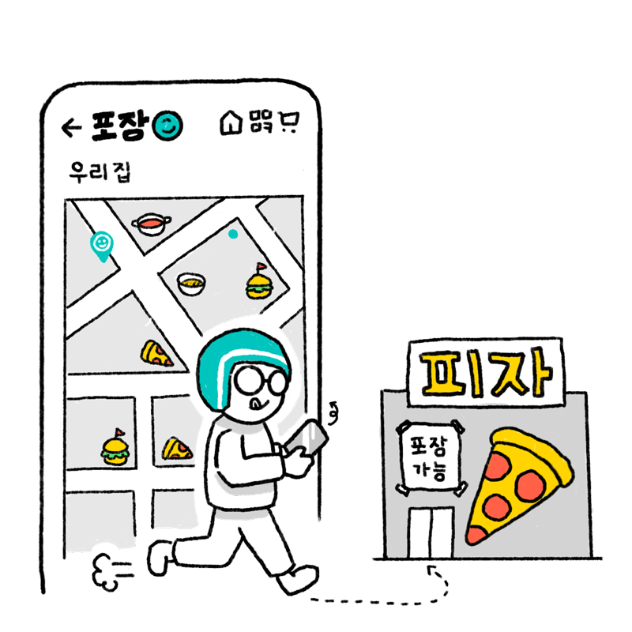
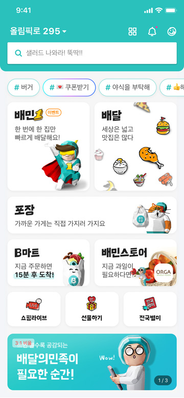
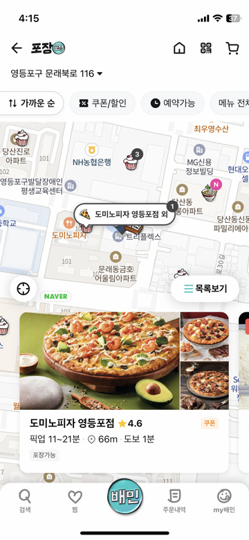
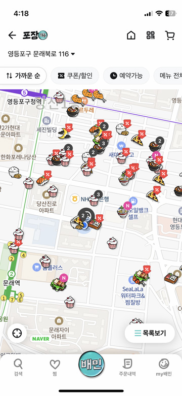

음식을 포장해서 먹고 싶어!
포장은 주문한 음식을 직접 가지러 가는 것입니다. 집 근처 포장할 수 있는 가게를 찾을 수 있습니다. 포장 주문하면 배달팁이 없습니다. 가까운 가게는 배달 대신 포장 주문해보세요. 집 근처의 포장할 수 있는 가게가 궁금할 때 외출했다가 돌아오는 길에 음식을 포장하고 싶을 때 배달 시간보다 포장 시간이 더 빠를 때
포장(포장 아이콘)
이럴 때 사용해봐요!
포장 이렇게 사용해보세요!

1
배달의민족 첫 화면에서 포장을 누른다.

2
지도가 나오고, 포장할 수 있는 가까운 가게가 음식 모양으로 표시된다.

3
음식 모양을 누르면 가게 정보가 나온다.

4
지도에서 가게를 더 찾아 볼 수 있다. 마음에 드는 곳을 선택해서 주문한다.